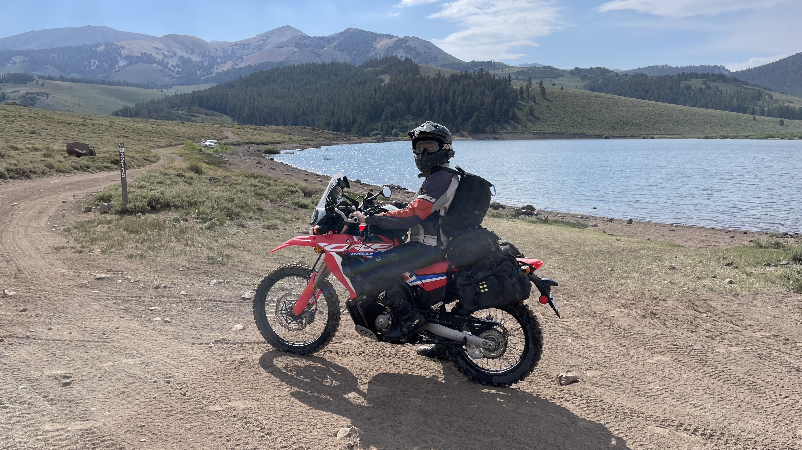
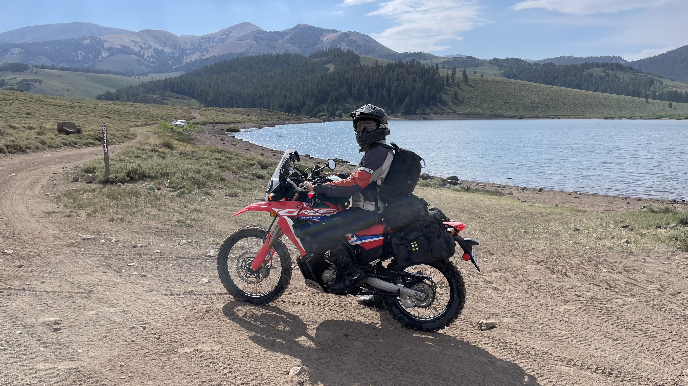
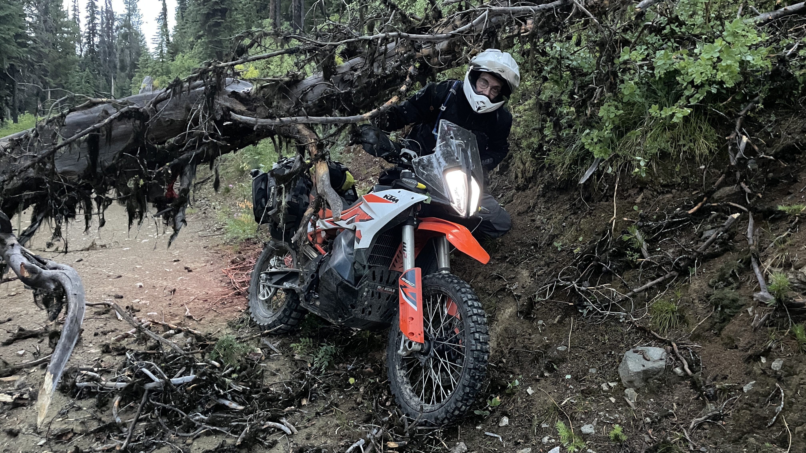

Lucas Julien
I'm an absolute perfectionist, open source enthusiast, tech nerd, and adventure motorcyclist. I also like science fiction, existential topics, and writing.
 

01
My System
My daily driver is an M2 Macbook Air. I'm seldom stationary so the battery life, quality, and sleek-ness of Macbooks strike a chord with me. Here's how it's set up. My Mac configuration is built around the philosophy or doing anything at anytime. Thus, I have over 100 apps (both GUI and CLI). It contradicts my ideal of minimalism, but since it takes me weeks to research and find the best app within a given category, I just have everything pre-researched and decided.
About Me
01
A bit into my past.
I've been a tech person pretty much my whole life. I started learning my first programming language, AHK, when I was 11. I then went to C# and, at 14, went crazy with CSS. From 16-18 I abandoned development entirely, video edited, and traveled all over with my dad on adventure motorcycles. After I graduated HS I stopped videography in favor of web development, switched all my machines to Linux, an got obsessed with open source and selfhosting.
02
I'm a perfectionist.
It's pretty annoying. My brain is wired to achieve a level of perfection that just isn't possible within the constraints of reality. At one point I was hard ressetting my Macbook once a week üòÖ.
03
I ❤️ open source.
I used proprietary software for most of my life. Like most, I didn't know that viable open source alternatives exist. In a digital world dominated by corporations who orchestrate mass data harvesting, the transparency of open source is something I can't live without.
04
I like exploration.
There's something so extraordinary about nature and the drastically different cultures of people across Earth. I've offroaded with my dad across 8 US states, border to border, 95% on dirt trails. We carry 50-80 pounds of gear to stay self-sufficient. It's a goal of mine to travel around the world one day.


05
I despise social media and phones.
I believe social media and phones to be the downfall of our generation. Used responsively, both are amazing tools. We are living in a dystopian reality where authenticity and the real world are being abandoned for a false and detrimal digital world.
06
Civ 5 is my favorite game.
Two dimensional and turn based. Sounds boring, but I think Civ 5 is the most immersive game ever made. There's nothing like commanding an entire country from a medieval tribe to a nuclear superpower with the fate of billions at your fingertips.
07
I ❤️ (geo)politics and military strategy.
It's probably why I love Civilization 5 so much but I find history, geopolitics, and military strategy to be incredibly interesting. One day I'd like to be a diplomat or an elected official in the US Government (yes a politician).
08
My development preferences.
I'm an avid developer. As much as I despise javascript and the ecosystem surrounding it (there's too many options üò´) I can't seem to escape web development. I use Bun for my runtime and Tailwind for my CSS. For hobby projects I use the Svelte framework but for more important projects I use Nuxt (Vue).
09
My favorite books:
1. Careless People
A must read that takes you deep into the corruption and power of Facebook and the destructive consequences for humanity.
My Thoughts
1. Why open source?
05.05.2025
2. The Problem, Solution, and New Generation of Open Source.
05.05.2025
Projects
01
This is my passion and life project; a place to consolidate the best of open source projects in a modern and scalable way. It functions with a mix of automation and human input.
02
A companion site for definitive-opensource, built with the Nuxt framework. It pulls data from applications.json and displays them with features not possible with a README like filtering and searching.

03
An NPC generator for RPG's. Stats, race, and sex are generated with Math.random(). These values are then passed into Ollama (a way to run local LLMs) which generates a description, skills, and inventory. For optimal results you ned to train a local model (I like Gemma3) on your RPG's documentation so that you get relevant information.